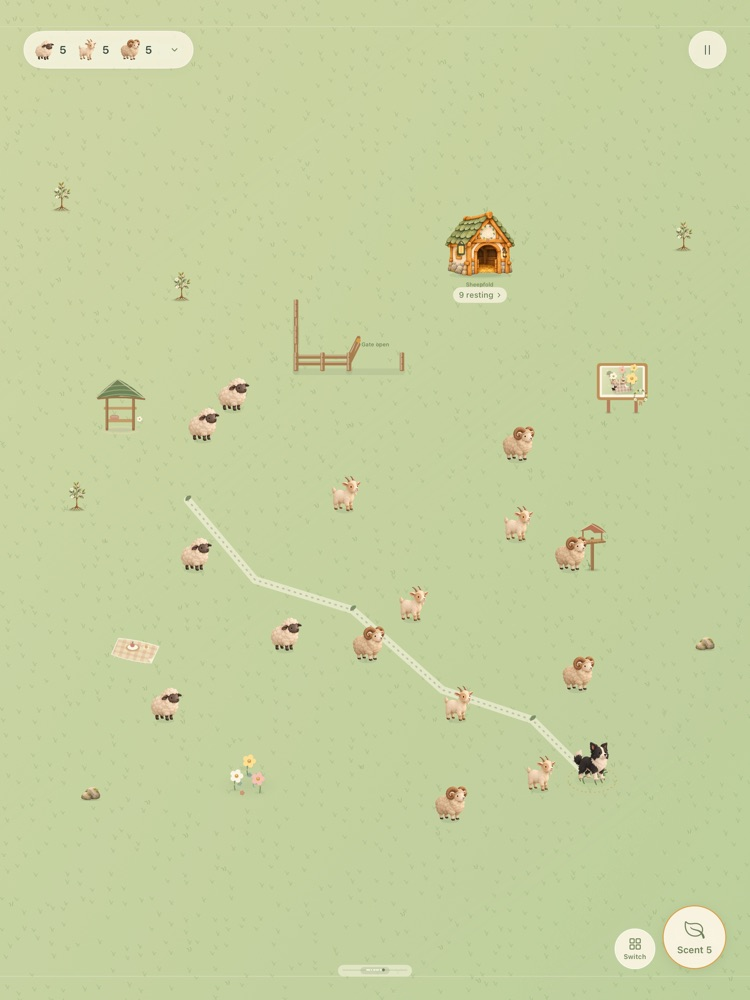
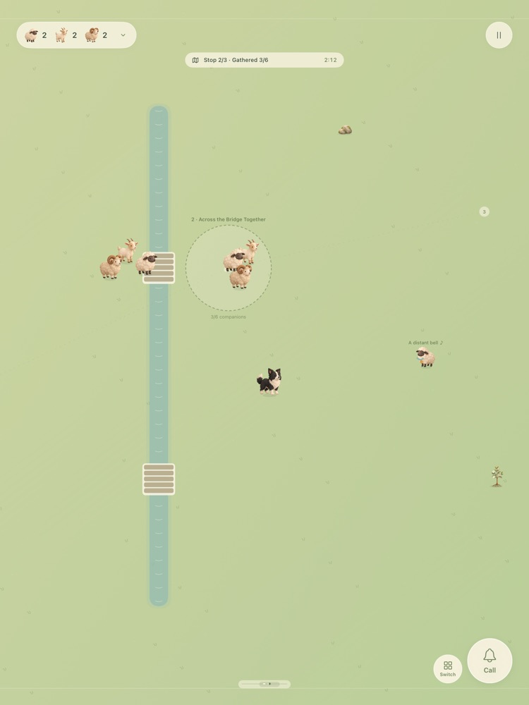

把羊群带到一起
引导同品种的三只羊聚拢，看它们留下一朵小花，再回到羊舍。照顾小羊，也慢慢赢得野羊的信任。
IPHONE & IPAD · 轻松牧羊游戏
Sheep Dog: A Cozy Meadow
带着一只边牧，照看一群羊。赶羊、拾起小花，把一小片草地布置成喜欢的模样。

牧场里的日常
不是只看着牧场变化。拖动手指，让小狗走进羊群，你来决定今天的故事。
引导同品种的三只羊聚拢，看它们留下一朵小花，再回到羊舍。照顾小羊，也慢慢赢得野羊的信任。
搬动羊舍，摆好栅栏，为树木、小花和摆件找个位置。小狗也能叼起物件，帮你整理牧场。
带着羊群去果园和溪流小径探索，带回物件和旅途记忆。回来后，熟悉的草地还在等你。


晴天、微风、雨雾和雪天，让熟悉的牧场换一种心情。音乐之间有安静的间歇，也别忘了让边牧留意偶尔来访的狼。喜欢眼前的景色，还能保存成牧场明信片。
可以用照片剪出一个模样，为它起名，收藏成自己的羊品种。制作使用游玩赚取的绒毛，不需要购买付费金币。这是牧场的小惊喜，不是开始游玩的门槛。
这是一款以操控牧羊犬、照看羊群和布置牧场为主的休闲游戏，适合喜欢狗狗、动物和慢节奏牧场的 iPhone / iPad 玩家。“治愈”描述的是轻松氛围，不是医疗效果。
日常游玩和本地保存可以离线进行，也不需要注册游戏账号。下载、内购、恢复购买和 iCloud 存档同步需要网络及相应 Apple 服务。
基础牧场、委托，以及果园和溪流散步免费游玩。小帮手包、花园小院和山谷远足是可选的一次性永久购买内容；没有订阅或付费金币。实际价格请以所在地区 App Store 和购买确认界面为准。
支持 iOS 17 或更高版本的 iPhone、iPadOS 17 或更高版本的 iPad。当前商店介绍列出九种语言：简体中文、繁体中文、英语、日语、韩语、西班牙语、德语、法语和巴西葡萄牙语。
由独立开发者周培臣（CiiN / Peichen Zhou）制作。英文名为 Sheep Dog: A Cozy Meadow，App Store 编号为 6809808103。
先来走一走，再决定要把它布置成什么样。
在 App Store 查看 ↗